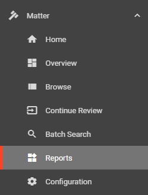
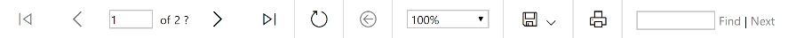
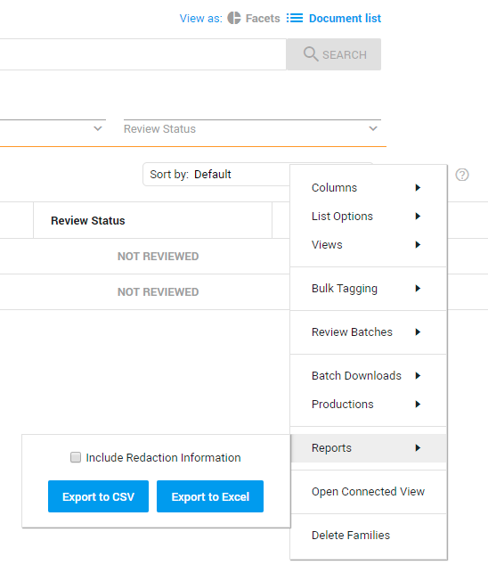
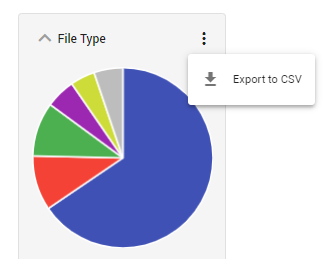

Reports keep the process of uploading, processing, reviewing, and other tasks transparent. There are multiple options to create/view reports:
Select Reports in the Matter menu to create and view one of the available reports. For more information on the reports you can run from this page, see

For each report the following options are available:

Page navigation
Refresh the contents of the report
Go back
Enlarge or reduce the size of the report page
Save to Word, Excel, Powerpoint, PDF, TIFF, MHTML, CSV, XML or data feed
Print the report
Search for content in the report
There are additional reports you can run apart from those available on the Reports page.
Document List

The Document List report allows you to run a report on all or select documents in the Document List table. For more information, see
Facets

Download Values and Counts from Facets with the Export to CSV option.
Uploads
Create a report on your Uploads with the Download CSV option.
Matter
To view all available information on the documents in your matter.